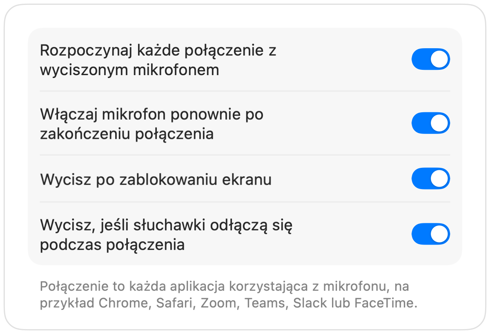

Jak wyciszyć Microsoft Teams za pomocą AirPods na Macu
Skrót Teams, Command-Shift-M, działa tylko wtedy, gdy okno Teams jest aktywne. Podczas spotkania zwykle przeglądasz coś innego: dokument, przeglądarkę lub udostępniany ekran.
Muffle wycisza mikrofon z dowolnego miejsca, w aplikacji Teams i w Teams w przeglądarce. Naciśnij AirPods, użyj skrótu klawiszowego lub kliknij pasek menu.
Wycisz Teams z dowolnego miejsca
- 1
Zainstaluj Muffle i zezwól na dostęp do mikrofonu.
- 2
Dołącz do spotkania w Teams.
- 3
Naciśnij Control-Option-M lub trzonek AirPods, aby wyciszyć mikrofon. Ikona na pasku menu zmieni kolor na czerwony.
- 4
Naciśnij ponownie, aby włączyć, lub przytrzymaj skrót, aby mówić, gdy mikrofon jest wyciszony.

- Teams w karcie przeglądarki zyskuje taką samą obsługę AirPods jak Google Meet dzięki Muffle.
- Włącz opcję „Wycisz po zablokowaniu ekranu”, aby odejście od biurka nigdy nie zostawiło aktywnego mikrofonu.
Pytania
Czy naciśnięcie AirPods działa w aplikacji Teams?
To zależy od wersji aplikacji Teams, ponieważ Teams potrafi samodzielnie przejąć to naciśnięcie. Skrót Muffle i przycisk na pasku menu działają w każdym przypadku.
Czy Teams pokaże, że mam wyciszony mikrofon?
Nie zawsze. Muffle wycisza sam mikrofon, więc Teams może nadal pokazywać go jako włączony, podczas gdy nikt w połączeniu Cię nie słyszy.